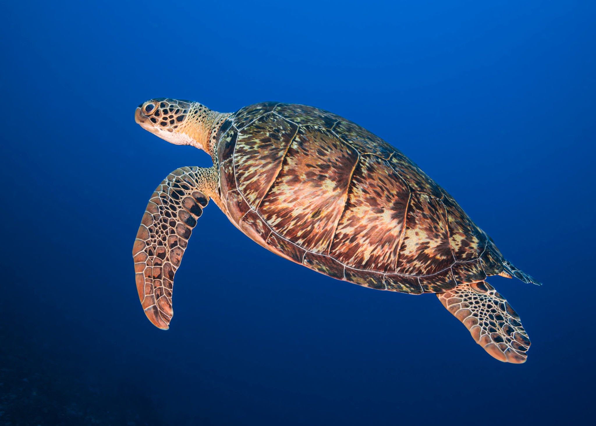

Four different species of sea turtles may be found in Sri Lanka, and they are all considered to be either endangered or critically endangered. The green turtle, hawksbill turtle , loggerhead turtle, and leatherback turtle are among these species. Several species can be found nesting on particular beaches all around the island, and each has its own distinctive traits.
HAWKSBILL TURTLE

- The term hawksbill describes the small, pointed beak of a bird.
- They feature an odd arrangement of interlocking scales on their shells that give the edges a serrated appearance.
- Stores commonly labeled them as ‘’tortoises shell’’ due to their brightly colored and uniquely designed shells
- These turtles are mostly found in Kosgoda.
- These turtles also tend to migrate across to the colder regions of the sea when needed.
- Early December would be the peak time to witness this turtles across the sea bed.
High population density map of hawksbill turtle
GREEN TURTLE

- These turtles are the most prevalent species of sea turtles in Sri Lanka, which shells that are brown, black or dark green
- This sea turtle species gets its name because the fat behind the top shell is frequently greenish.
- The green turtle, which may grow to a height of 120 centimeters from our faces out against the loggerhead turtle as the second largest species of turtle.
- Adult green turtles become vegetarian and eat only sea grasses, seaweed, and algae, whereas juvenile turtles eat worms, jellyfish, and sponges.
- The locations in Sri Lanka where these types of turtles are found are mainly in Rekawa beach.